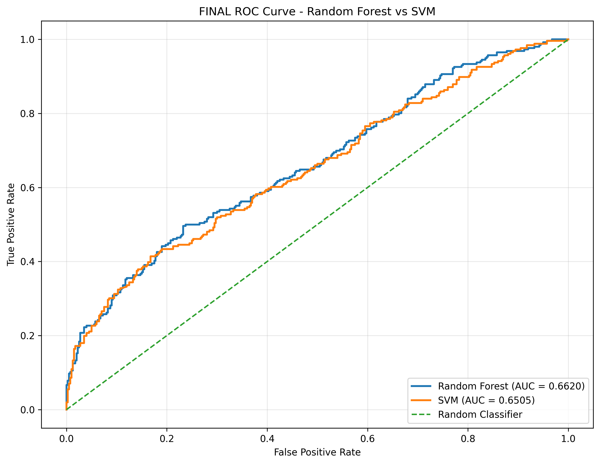
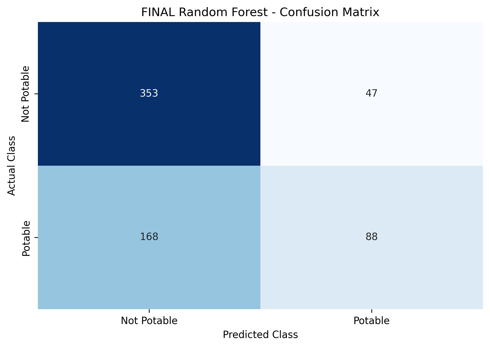
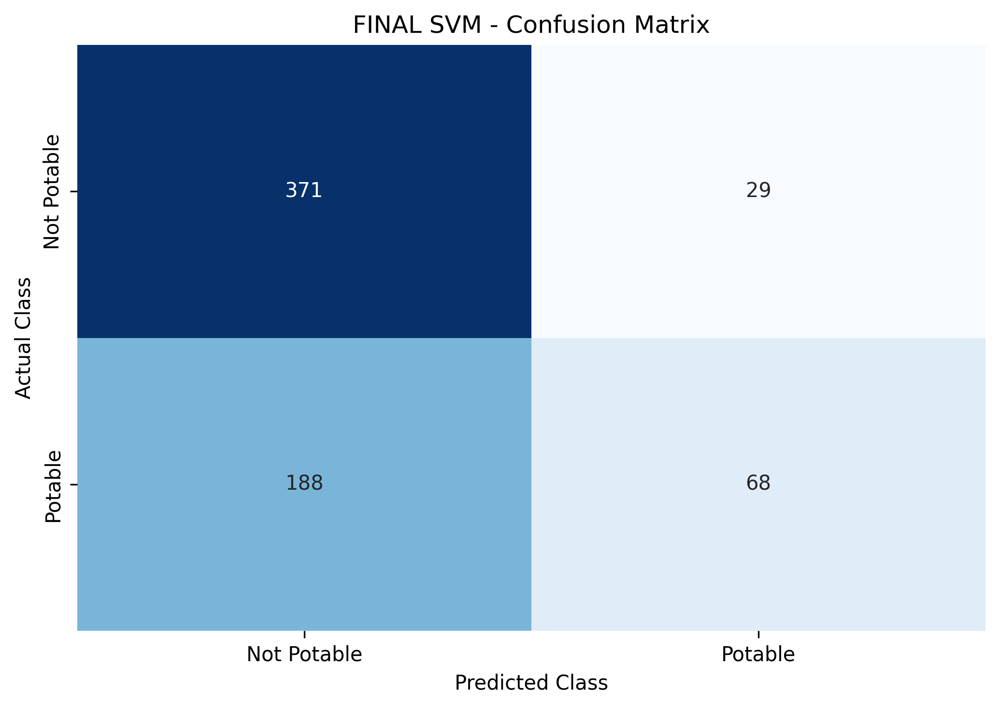
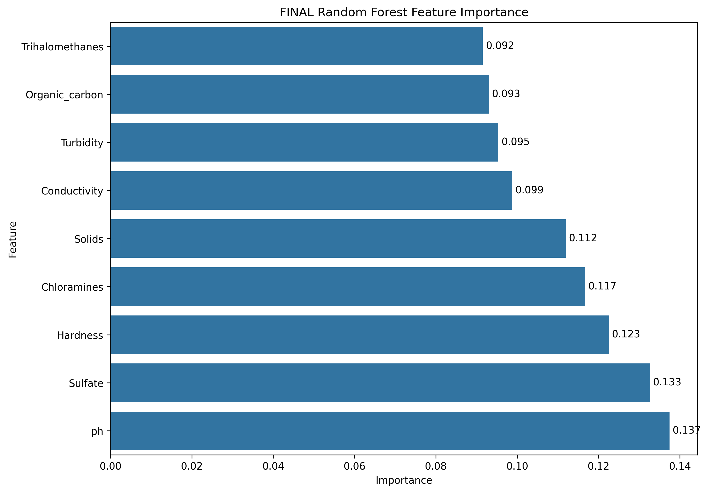

MACHINE LEARNING SYSTEM
Water Quality Classification
Water Quality Prediction
Enter the measured water-quality parameters to classify the sample.
Sample Parameters
Enter values for all nine features.
Prediction Result
Output from your trained models.
Ready for analysis
Enter the water-quality values and click Analyze Water.
—
—
Model Analytics
Evaluation results from the held-out test set.
Model Performance
ROC Curves

Random Forest Confusion Matrix

SVM Confusion Matrix

Random Forest Feature Importance

Dataset Class Distribution
Distribution of potable and non-potable samples.
Evaluation Metric Note
Why MSE and MAE are not shown as model-performance metrics.
Machine Learning Models
Models used in the classification system.
Random Forest
Ensemble learning model based on multiple decision trees.
Support Vector Machine
RBF-kernel classifier using standardized water-quality measurements.
Final Random Forest Parameters
Selected during accuracy-focused model optimization.
Loading...
Final SVM Parameters
Selected during accuracy-focused model optimization.
Loading...
Training Configuration
Dataset Overview
Water-quality dataset used for model training.